NN for XOR
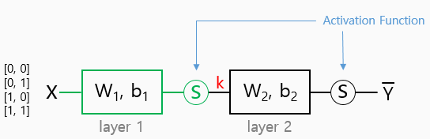
W1 = tf.Variable(tf.random_uniform([2, 2] -1.0, 1.0))
W2 = tf.Variable(tf.random_uniform([2, 1] -1.0, 1.0))
b1 = tf.Variable(tf.zeros([2]), name="Bias1")
b2 = tf.Variable(tf.zeros([1]), name="Bias2")
# Our hypothesis
L2 = tf.sigmoid(tf.matmul(X, W1) + b1)
hypothesis = tf.sigmoid(tf.matmul(L2, W2) + b2)3단 layer 설계 어렵지 않다!
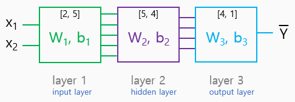
W1 = tf.Variable(tf.random_uniform([2, 5] -1.0, 1.0))
W2 = tf.Variable(tf.random_uniform([5, 4] -1.0, 1.0))
W3 = tf.Variable(tf.random_uniform([4, 1] -1.0, 1.0))
b1 = tf.Variable(tf.zeros([5]), name="Bias1")
b2 = tf.Variable(tf.zeros([4]), name="Bias2")
b3 = tf.Variable(tf.zeros([1]), name="Bias3")
# Our hypothesis
L2 = tf.sigmoid(tf.matmul(X, W1) + b1)
L3 = tf.sigmoid(tf.matmul(L2, W2) + b2)
hypothesis = tf.sigmoid(tf.matmul(L3, W3) + b3)9 hidden layers
hidden layers가 9개 이므로 total layers 는 11개
W1 = tf.Variable(tf.random_uniform([2, 5] -1.0, 1.0), name="Weight1")
W2 = tf.Variable(tf.random_uniform([5, 5] -1.0, 1.0), name="Weigth2")
...
W10 = tf.Variable(tf.random_uniform([5, 5] -1.0, 1.0), name="Weigth10")
W11 = tf.Variable(tf.random_uniform([5, 1] -1.0, 1.0), name="Weigth11")
b1 = tf.Variable(tf.zeros([5]), name="Bias1")
b2 = tf.Variable(tf.zeros([5]), name="Bias2")
...
b10 = tf.Variable(tf.zeros([5]), name="Bias10")
b11 = tf.Variable(tf.zeros([1]), name="Bias11")chain 적용 시키기
# our hypothesis with tf.name_scope("layer1") as scope: L1 = tf.sigmoid(tf.matmul(X, W1) + b1) with tf.name_scope("layer2") as scope: L2 = tf.sigmoid(tf.matmul(L1, W2) + b2) ... with tf.name_scope("layer10") as scope: L10 = tf.sigmoid(tf.matmul(L9, W10) + b10) with tf.name_scope("last") as scope: hypothesis = tf.sigmoid(tf.matmul(L10, W11) + b11)# TensorBoard로 그래프를 그리기위해 반드시 scoping 해야함
Poor result?
분명 Deep & wide NN을 사용하였는데, 결과가 형편없다?
lab09_1의 exercise에서 이미 결과가 좋지 않게 나오는 것을 확인할 수 있었다.
원인분석은 아래에서...
lect9-2 : Backpropagation chain rule
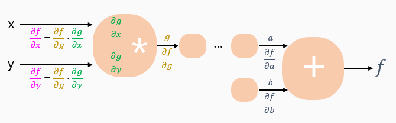
Sigmoid의 모순
각 노드들의 미분 값은 0보다 크고 1보다 작은 값을 갖는다.
Chain Rule에 의해 각 노드들의 미분값의 곱으로 계산되는데, 곱할수록 값은 더욱 더 작아지게 되어 앞 단 layer의 영향도가 현저히 줄어든다.
Vanishing gradient NN winter2 : 1986 - 2006
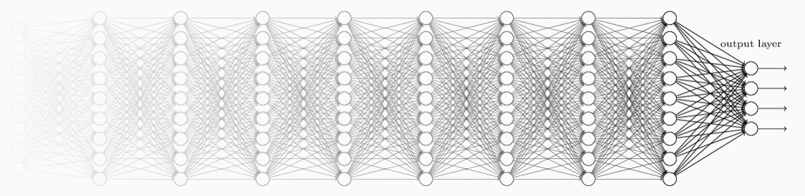
86년도에 backpropagation으로 여러 문제가 해결되면서 NN은 다시 각광받지만, layer가 두터워질 수록 입력단과 가까운 기울기는 결과에 미미한 영향을 미치게 되는 현상이 발생한다.
Geoffrey Hinton's summary of findings up to today
- "연구에 사용된 라벨링된 데이터의 크기는 매우 작았다"
- "현재 컴퓨터의 컴퓨팅 파워가 너무 딸린다"
- "weights의 초기화를 멍청한 방법으로 하고 있었다"
- "잘못된 비 선형 알고리즘(sigmoid)을 사용하고 있었다"
Sigmoid!
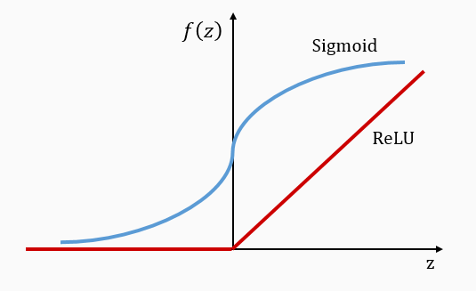
ReLU의 신박한 Mechanism
-
0보다 작아? = 0
-
0보다 커? = z
ReLU Rectified Linear Unit
L1 = tf.sigmoid(tf.matmul(X, W1) + b1)
L1 = tf.nn.relu(tf.matmul(X, W1) + b1)
더 이상 NN에서 sigmoid는 과감히 버린다.
대신 ReLU를 사용하자!
그 외의 Activation Functions
ReLU의 등장 이후에도 여러 연구를 거쳐 다양한 Activation Function들이 등장하였다.
•Sigmoid
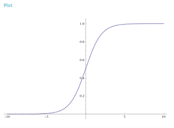
•tanh
•Leaky ReLU
•Maxout
•ELU
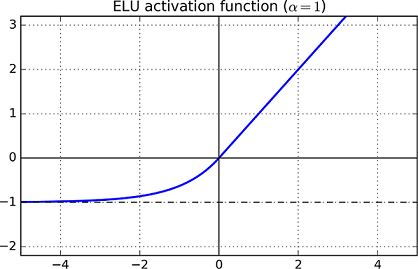
Geoffrey Hinton's summary of findings up to today
- "연구에 사용된 라벨링된 데이터의 크기는 매우 작았다"
- "현재 컴퓨터의 컴퓨팅 파워가 너무 딸린다"
- "weights의 초기화를 멍청한 방법으로 하고 있었다"
- "잘못된 비 선형 알고리즘(sigmoid)을 사용하고 있었다"
Need to set the initial weight values wisely
-
Not all 0's
-
Challenging issue
-
hinton et al.(2006) "A Fast Learning Algorithm for Deep Belief Nets"
- Restricted Boltzmann Machine (RBM)
RBM의 정의와 구조에 대해 알아보기
How can we use RBM to initialize weights?
-
RBM 아이디어를 인접한 두 layer에 pre-training 단계로 적용시킨다.
(fine tuning이라고도 한다) -
위의 과정을 모든 layer에 걸쳐 반복한다.
-
반복이 끝난 후 모든 노드들에 대하여 초기 weight이 주어진다.
-
Example : Deep Belief Network
- weight initialized by RBM
더 나은 initialization 등장
Xavier/He initilization
- Makes sure the weights are "just right", not too small, not too big
- Using number of input (fan_in) and output (fan_out)
# Xavier initialization
# Glorot et al. 2010
W = np.random.randn(fan_in, fan_out)/np.sqrt(fan_in)
# He et al. 2015
W = np.random.randn(fan_in, fan_out)/np.sqrt(fan_in/2)Still an active area of research 아직도 기회의 땅!
- We don't know how to initialize perfect weight values, yet
-
Many new algorithm
- Batch normalization
- layer sequential uniform variance
- ... - P.S. 교수님의 조언 : 여러가지 알고리즘을 적용시켜서 성능향상을 꾀하라~
Overfitting
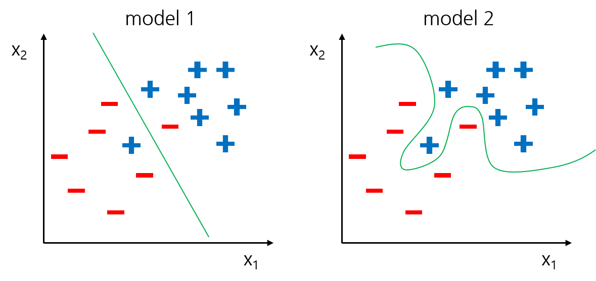
Am I overfitting? 점검하는 법
- training dataset에 대해 매우 높은 정확도가 나왔지만,(ex: 0.99)
- test dataset에 대해 낮은 정확도가 나온다? (ex: 0.85)
- Overfitting이 일어난 케이스
Solutions for overfitting
- More training data !
- Reduce the number of features
- Regularization
Regularization
- Let's not have too big numbers in the weight
-
ex) l2regularization
l2reg = 0.001 * tf.reduce_sum(tf.square(W))Dropout
A simple way to Prevent Neural Networks from Overfitting

"randomly set some neurons to zero in the forward pass"
Forces the network to have a redundant representation.
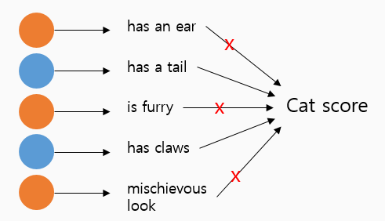
한 번은 특정 노드들로만 학습시키고, 다음 번엔 그 외의 노드들로 또 학습시켜서 정확도를 높힌다?
아이러니하게도 이런 어처구니 없는 방법으로 꽤 성능향상을 볼 수 있다고 한다.
TensorFlow implementation
dropout_rate = tf.placeholder("float")
_L1 = tf.nn.relu(tf.add(tf.matmul(X, W1), B1))
L1 = tf.nn.dropout(_L1, dropout_rate)
# TRAIN :
sess.run(optimizer, feed_dict={X : batch_xs, Y : batch_ys, droput_rate : 0.7})
# 학습할 때는 dropout으로 70% 비율로 node를 골라서 학습시키고
# EVALUATION :
print "Accuracy:", accuracy.eval({X: mnist.test.images, Y: mnist.test.labels, dropout_rate: 1})
# 검증할 때는 dropout 비율을 다시 100%로 해야한다.What is ensemble? 앙상블이란?
- Aggregation of multiple learned models with the goal of impoving accuracy.
- 설문조사를 할 때 1명에게만 물어보는 것보다 여러명에게 물어보는 것이 정확도가 높아진다는 점을 이용한 것.
- 실제로 4~5%까지의 성능향상을 기대할 수 있음.
크게 2가지 방법으로 사용된다
- Different feature weightings 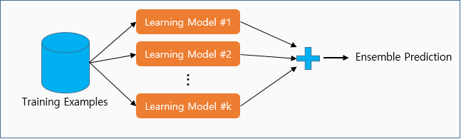
- Divide up training data among models 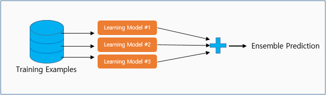